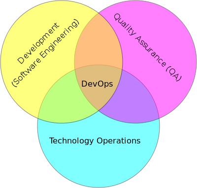
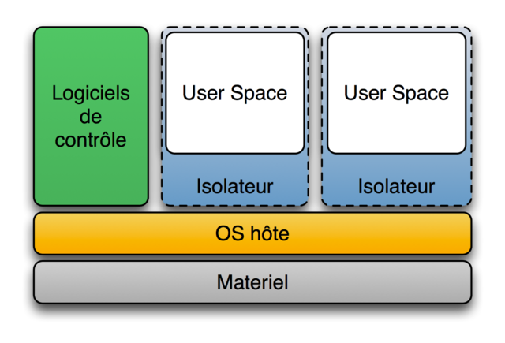
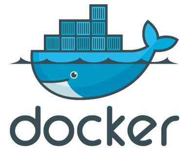

Retours sur Devoxx 2014
Objectifs
- Concepts
- Mots clés
Agenda
- Historique
- Devoxx France
- Le Programme
- Mon retour d'expérience
Historique
- Conférence anglophone Java européenne
- Qui : Stephen Johansen
- Où : Anvers
- Depuis : 2002
Devoxx France
Devoxx France
- Qui : Paris JUG
- Où : Paris
- Depuis : 2012
En chiffres
- 3 jours
- 1500 participants
- 709 talks proposés
Le Programme
Les thématiques
- Java, Java EE, Java SE
- Agilite, DevOps
- Web, HTML5
- Cloud, Big Data, NoSQL
- Langages alternatifs
- Mobile
- Future
Les formats de conférences
- Keynotes
- University
- Quickie
- Hands-on Labs
- Tools-in-Action
- Conference
Mon retour d'expérience
Multicanaux

REST
- Pour Representional state transfer
- Alternative à SOAP
- Utilise les verbes d'actions : POST, PUT, GET, DELETE
- Formats XML, HTML, JSON
Exemple :
Requête :http://server.com/users/{id}
{
"name": "Etienne BESSON",
"company": "ASI Informatique",
"email": "ebesson@asi-informatique.fr"
}
Pour la couche d'IHM

Java 8
Les nouveautés :
- API date & time
- Nouveau moteur javascript
- Lambda expressions
- Notion de flux Stream
- Etc...
- API date & time
- Nouveau moteur javascript
- Lambda expressions
- Notion de flux Stream
- Etc...
Lambda expressions
List users = Arrays.asList(
new User("Steve", "Vai", 40), new User("Joe", "Smith", 32),
new User("Chuck", "Norris", 15),new User("John", "Doe", 19));
int total = 0;
int nbUsersOver18years = 0;
for (User u : users) {
if (u.getAge() > 18){
total += u.getAge();
nbUsersOver18years++;
}
}
double average = (double)total / (double)nbUsersOver18years;
average = persons.stream()
.filter(u -> u.getAge() > 18)
.map(u -> u.getAge())
.average().getAsDouble();
Pourquoi utiliser les lambdas expressions :
- Simplification du code métier
- Pattern map / filter / reduce
- Programmation fonctionnelle
- Et plus encore ...
Le bon et le mauvais testeur...
Des outils pour faciliter l'écriture de ses tests :
- AssertJ
- InfiniTest
- DbSetup
- JunitParams
Devops
C'est un mouvement ayant pour objectif l’alignement du système d’information sur les besoins de l’entreprise (en se concentrant plus essentiellement sur la partie développement / opérations).
Allez vers le continous delivery

Des outils de provisioning :
- Chef
- Puppet
- Ansible
Notions sur la virtualisation
Les grandes familles:- Hyperviseur de type 1 (bare metal): KVM, Xen, ESXi
- Hyperviseur de type 2 (émulateur): Virtualbox
- Conteneur
Le conteneur (isolateur)
Grouper, isoler et contrôler un groupe de process
Les joies du déploiement

La révolution

Le filtrage collaboratif
Regroupe l'ensemble des méthodes qui visent à construire des systèmes de recommandation utilisant les opinions et évaluations d'un groupe pour aider l'individu